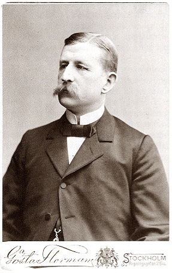
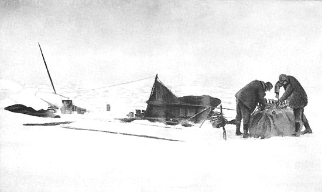

The Full Story
What was it all about?
Andrée's Arctic balloon expedition of 1897 was a failed effort to reach the North Pole, resulting in the deaths of all three Swedish expedition members, S. A. Andrée, Knut Frænkel, and Nils Strindberg. Andrée, the first Swedish balloonist, proposed a voyage by hydrogen balloon from Svalbard to either Russia or Canada, which was to pass, with luck, straight over the North Pole on the way. The scheme was received with patriotic enthusiasm in Sweden, a northern nation that had fallen behind in the race for the North Pole.

Failing the mission
After Andrée, Strindberg, and Frænkel lifted off from Svalbard in July 1897, the balloon lost hydrogen quickly and crashed on the pack ice after only two days. The explorers were unhurt but faced a grueling trek back south across the drifting icescape. Inadequately clothed, equipped, and prepared, and shocked by the difficulty of the terrain, they did not make it to safety. As the Arctic winter closed in on them in October, the group ended up exhausted on the deserted Kvitøya (White Island) in Svalbard and died there.

The journey home
Eagle had been stocked with safety equipment such as guns, snowshoes, sleds, skis, a tent, a small boat (in the form of a bundle of bent sticks, to be assembled and covered with balloon silk), most of it stored not in the basket but in the storage space arranged above the balloon ring. These items had not been put together with great care, and little attention was paid to existing designs used by societies living in polar regions. In this, Andrée contrasted not only with later but also with many earlier explorers.


By the time they crashed, they had thrown some of the provisions overboard. The three men took most of the rest with them on leaving the crash site, along with other necessities such as guns, tent, ammunition, and cooking utensils, making a load on each sled of more than 200 kilograms (440 lb). This was not practical, as it broke the sleds and wore out the men. After one week, they sorted out and left behind a big pile of food and non-essential equipment, bringing the loads down to 130 kilograms (290 lb) per sled. It became more necessary than ever to hunt for food. They shot and ate seals, walruses, and especially polar bears throughout the march.
The discovery of the camp
For 33 years the fate of the expedition remained one of the unsolved riddles of the Arctic. The chance discovery in 1930 of the expedition's last camp created a media sensation in Sweden, where the dead men had been mourned and idolized. The Norwegian Bratvaag expedition, studying the glaciers and seas of the Svalbard archipelago from the Norwegian sealing vessel Bratvaag of Ålesund, found the remains of the Andrée expedition on 5 August 1930.